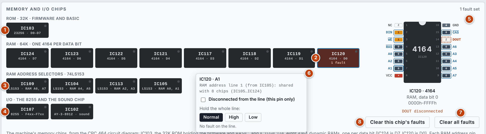
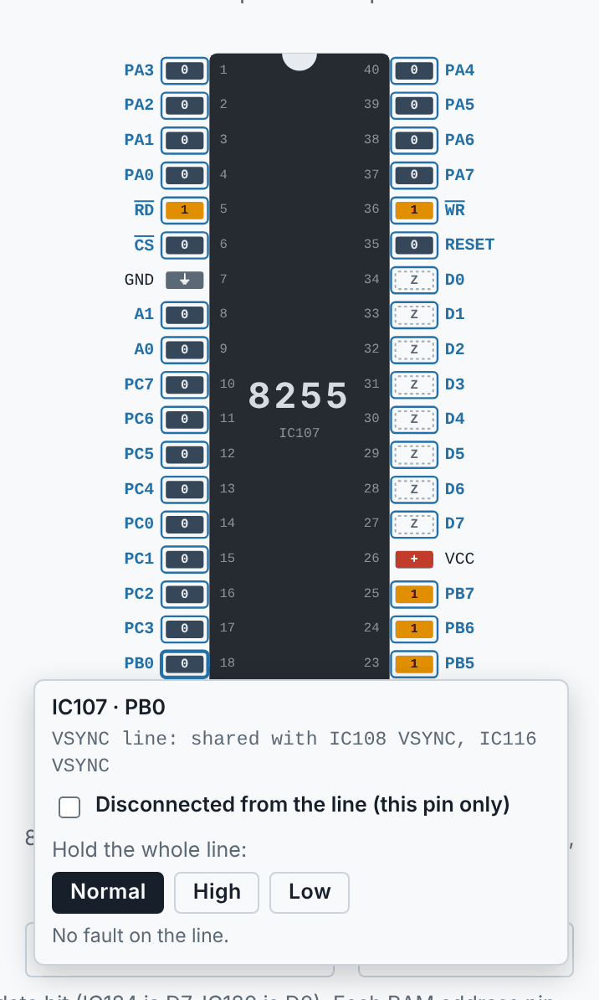
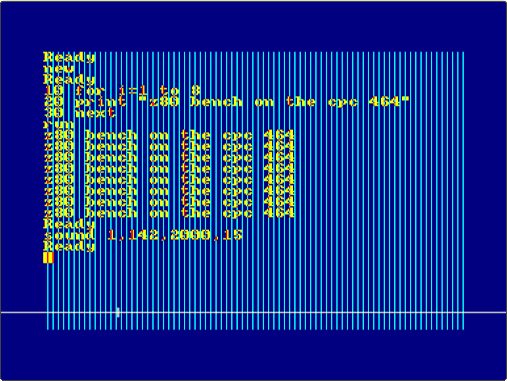
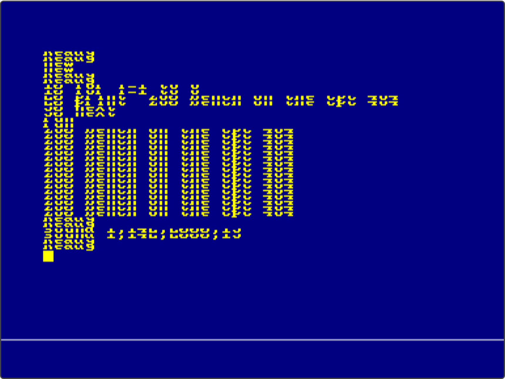

> LIST
Amstrad CPC 464 documentation
How to use the emulator, and how the machine it models is put together. The numbers in each list match the numbered markers on the screenshot above it. The emulator is work in progress: tapes are read from CDT files only, not from WAV recordings.
User guide
The emulator is Z80 Bench with an Amstrad CPC 464 built around the CPU from the machine's circuit diagram. Everything Z80 Bench does still works here; this guide covers what the machine adds, and points to the Z80 Bench documentation for the shared debugging tools.
Quick start
- Press Load ROM… and choose your own two 16 KB ROM images, the firmware (
OS_464, CRC815752DF) and Locomotive BASIC 1.0 (CRC7D9A3BAC), together or one at a time; one 32 KB image of both also works. The ROMs are copyrighted and are not included. Your browser keeps them, so you only load them once. - The machine switches on and runs in real time, and BASIC says Ready.
- Click the picture and type, or click the keys drawn under it.
The screen

- Toolbar: reset, clock, step and run controls.
- Screen: the picture, the ROM loader, the gate array choice and the keyboard.
- Processor, gate array and 6845: the three chips that run the machine, with live pins and fault menus.
- Memory and I/O chips: the ROM, the eight RAM chips, the four RAM address selectors, the 8255 and the sound chip, with live pins and fault menus.
- Program: the assembler and hex loader.
- I/O ports
- Disassembly
- Memory: the 64K the CPU sees now, with the ROM where a ROM half is switched on.
- Memory bitmap: the ROM and the RAM as a picture, tinted by use.
- Registers
- Debug: breakpoints, stops and faults.
- Bus timing
- CPC hardware: the memory map, the gate array, READY, the 6845, the monitor and the 8255.
The picture and the keyboard

- Picture: the whole of what a monitor would show, border included, built clock by clock as the CPU runs. Click it to give it the keyboard. While the machine is paused, a white line and mark show where the beam is.
- Picture details: the screen mode and its number of columns, the 6845's scan line, and the frame count.
- Load ROM…: takes the firmware and BASIC. The message under the buttons gives each image's CRC and names the ROMs it recognises. With the firmware but no BASIC the machine starts and then stops in the empty half.
- Power on / restart: clears the RAM, resets the machine and runs it in real time.
- Dump RAM (.bin): saves all 64K of RAM,
0000h–FFFFh, as a raw file. - Gate array: the chip fitted at IC116, a 40010 or a 40007. The two behave alike here; their pins are arranged differently, which matters for the fault menus.
- Sound: through the built-in speaker, as from the stereo socket, or off; see Sound.
- Insert tape (.cdt)…: puts a CDT or TZX tape file in the deck.
- Play (Stop while it is down): the cassette's PLAY key.
- Rewind: back to the start of the tape.
- Record (Stop recording while recording): REC and PLAY on a blank tape.
- Save tape (.cdt): saves the tape in the deck as a file, such as a recording you made.
- Block: the blocks on the tape, with where each starts; pick one to wind the tape there.
- Instant loading: records the firmware reads come straight from the tape file, with no waiting; see The cassette.
- Fast loading: runs at full speed while the tape moves, and back to real time when the motor stops.
- Tape: the file, the block under the head, the time on the tape, PLAY and the motor.
- Keyboard: the CPC 464 layout. SHIFT and CTRL stay down for the next key.
Characters you type come out as typed: the page presses the CPC key, with or without SHIFT, that gives that character, whatever your own keyboard layout. A few keys go by position:
| Your key | CPC key |
|---|---|
| Enter | RETURN |
| Backspace | DEL |
| Delete | CLR |
| Alt | COPY |
| Numeric keypad 0–9, . | The function keys f0–f9 and f. |
| Numeric keypad Enter | The small ENTER key |
| Arrow keys, Tab, Esc, Caps Lock, Ctrl | The same keys |
Sound
The sound chip plays while the machine runs in real time. Browsers only let a page make sound after a click or a key press, so it starts with your first one. Choose Speaker to hear all three channels together, as from the CPC's built-in speaker, or Stereo socket to hear channel A on the left, C on the right and B in both, as from the stereo socket at the back. The choice is remembered. The sound goes quiet while the machine is paused, runs at another speed, or loads at full speed. Try SOUND 1,142,200,15: channel A at 440 Hz, the A above middle C.
A fault that stops CCLK (no 16 MHz clock, or the gate array's CCLK pin or line held or disconnected) stops the sound chip too, so the sound stops.
The cassette
The deck plays CDT files, the tape format used for CPC tapes (the TZX format of the Spectrum, with the same blocks). The file is turned into the signal it holds, and the computer reads that signal from the cassette input bit by bit, as it would from a real tape. So both the firmware's own loader and the custom loaders of games, such as Speedlock, work.
To load a program:
- Press Insert tape (.cdt)… and choose the file.
- Type
RUN""(orLOAD"") and press RETURN. The CPC says Press PLAY then any key:. - Press Play under the picture, then any key on the CPC.
The tape moves only while PLAY is down and the computer has the motor on, so it stops where a program switches the motor off between files, as a real deck would. Some tapes hold a "stop the tape" block, which releases PLAY: press it again when the program asks. With Fast loading ticked a long tape loads in a fraction of its running time; untick it to load in real time.
Instant loading (ticked unless you untick it; the choice is remembered) skips the wait for anything the firmware loads: BASIC programs, RUN"", and the files of most games. Each record goes straight from the tape file into memory and the tape is wound past it, so after the firmware's usual couple of seconds for the motor to run up a file is in at once. It works whether the tape goes in before or after you type RUN"". Games with their own loaders, such as those protected with Speedlock, don't use the firmware to read the tape: their loader still reads the signal, so keep Play down and Fast loading speeds it up. A tape can mix the two: the firmware loads the first files instantly and the game's loader then reads the rest from where the tape has got to.
To save a program:
- Type
SAVE "name"and press RETURN. The CPC says Press REC and PLAY then any key:. - Press Record, then any key on the CPC.
- When it says Ready, press Stop recording.
What the computer wrote while the motor was on becomes a new tape in the deck, rewound, so you can LOAD it back straight away; Save tape (.cdt) keeps it as a file you can load later or in another emulator. A recording is kept as the pulses it holds, not decoded, so anything a program writes to tape is kept as it was written.
Running and stepping

- Reset CPU
- Master reset: also forgets the ROMs (load them again to switch on) and clears the RAM, breakpoints, stops and faults. It asks for a second click.
- Clock 1 T-state (C)
- Step instruction (S)
- Run / Pause (R). The keyboard shortcuts work when the picture does not have the keyboard.
- Speed: Real time (4 MHz) runs at the machine's own speed. Full speed runs as fast as your computer allows. The slow clock rates let you watch the pins change.
- Status: what the machine is doing, or what halted it.
Processor, gate array and 6845

- Z80A (IC111): the processor. Clicking its CLK pin pulses one clock; right-click it for its fault menu.
- Gate array (IC116): drawn with the pin arrangement chosen on the Screen panel. Its CPU ADDR, CAS ADDR and 244EN pins are shown only.
- 6845 (IC108): the video controller. Its MA10, MA11, RA3, RA4 and CURSOR pins go nowhere that matters on this board and are shown only.
- Fault menu: click any ringed pin. It names the line the pin is on and the other pins that share it; see Fault simulation.
- Legend: high, low and floating levels; a ringed pin takes a fault.
- Bus readout: the machine cycle and T-state, and what is on the address and data buses.
All pins follow the machine clock by clock, wait states included. The 6845's outputs change once a character, every four clocks, and the gate array's R, G and B pins show the colour being sent at each clock.
Memory and I/O chips

- ROM: IC103, the 32K ROM holding the firmware in its lower half and BASIC in its upper half.
- RAM: IC117–IC124, eight 4164 dynamic RAMs, one for each data bit. A tile's dot lights while its chip is being accessed, and a tile with a fault turns red.
- RAM address selectors: IC109, IC104, IC113 and IC105, four 74LS153s. Each RAM address pin comes from one half of one of them; see Chips.
- I/O: the 8255 (IC107) and the AY-3-8912 sound chip (IC102).
- Pinout: click a tile to see that chip's pins, which follow the CPU's bus cycles on every clock. The display's own reads of the RAM, which share every microsecond with the CPU, are not shown on the pins.
- Fault menu: click a pin.
- Faults on this chip
- Clear this chip's faults (its pins, and the lines its pins are on) and Clear all faults

Fault simulation
Every chip on the two chip panels takes faults, of two kinds:
- A line held high or low is a short on the wire: every pin on that line, on every chip, sees the level and shows it.
- A pin disconnected from its line (tick the box in the menu) is a broken trace or a lifted pin: only that chip is affected. A disconnected input floats high, or can be given a level of its own. A disconnected output no longer drives its line, which then floats high for the pins that listen to it. A disconnected pin ignores a fault on its line.
Because the two kinds are kept apart, a broken trace to the gate array's VSYNC pin leaves the 8255 still seeing VSYNC, while a VSYNC line held low reaches both. A pin on a line of its own has the plain choices Disconnected, High and Low. Lines that reach devices not drawn as chips still act on them: an address or data line held at a level is seen by the whole machine. Faults are listed in the Debug panel and cleared there, on the chip panels, or by Master reset.


Some faults the model handles in particular ways:
| Fault | Effect |
|---|---|
| Gate array CK16 (the 16 MHz oscillator) | The whole machine stops, and the picture goes dark |
| Gate array PHI, or the Z80's CLK | The Z80 is held; the picture goes on |
| READY low | The Z80 waits for ever; the picture goes on |
| READY high | No wait states. ROM reads still work, but a RAM access out of step with the gate array's RAM cycle reads what the RAM last put out, and a write is lost. This is an approximation of the board |
| Gate array CCLK, or the 6845's CLK | The 6845's counters stand still: no sync, so no interrupts |
| RESET line low | The Z80, the gate array, the 6845 and the sound chip all stay in reset while the clocks run. A chip whose own RESET pin is disconnected or held high is not reset. The 8255's RESET is a separate, active-high line from the same reset circuit: a reset resets it, but holding the RESET line does not hold it |
| 6845 HSYNC or VSYNC | The monitor runs free at its own line or frame rate, so the picture tears or rolls, and the interrupts change with HSYNC |
| 6845 MA0–MA13 or RA0–RA2 | The picture is read from the wrong addresses |
| Gate array R, G or B disconnected | That colour goes dark |
| Gate array ROMEN or RAMRD | The ROM and the RAM latch can both drive the bus (the CPU reads the AND of the two) or neither (it reads FFh) |
| RAS or CAS | The RAM never answers |
| A selector input (1C0–1C3, 2C0–2C3) | That address bit is fixed for that path only: inputs 0 and 1 are the CPU's column and row bits, inputs 2 and 3 the display's. A CPU input held fixes a bit of the CPU's RAM addresses, so two areas of memory become one; a display input held changes the picture only |
| A selector's B (the gate array's CPU line) or A (CAS ADDR) | The selector takes the wrong inputs: with B high the CPU's accesses go to the display address, with B low the display shows the CPU's last address; with A high the column bits repeat the row bits, with A low the other way round. On the line the four selectors share, on one pin only that selector's two RAM address bits |
| A selector's 1G or 2G high | That half's output goes low: one RAM address pin is always 0 |
| A selector output (1Y, 2Y) | Reaches the eight RAM chips' address pin, as a fault on that RAM address line |
| 8255 port pins | What the pin drives or reads is wrong: PC0–PC3 the keyboard row, PC4 the cassette motor, PC5 the tape output, PC6 and PC7 the sound chip's BC1 and BDIR, port A the sound chip's data; PB0 VSYNC, PB1–PB4 the links, PB5 EXP, PB6 BUSY, PB7 the tape input |
| 8255 CS, A1 or A0 | Never selected, selected for every port, or the wrong port |
| 8255 RD or WR | High: it never answers reads, or never takes writes. Low: it answers every read while selected (A11 low), memory reads too, so the CPU reads the AND; or takes every write while selected, memory writes too |
| 8255 RESET held high or disconnected | Held in reset: its ports are inputs and the lines float high, so the cassette motor runs and the sound chip's bus control reads "latch address" |
| Sound chip DA0–DA7 | Register numbers and values arrive with that bit fixed, and what it reads back (the keyboard) too |
| Sound chip BDIR, BC1 or BC2 | The wrong bus action: nothing, a write, a read or an address latch |
| Sound chip A8 low | Not selected: it takes nothing, and the keyboard reads as no keys pressed |
| Sound chip CLOCK or RESET | No clock: it stands still and is silent. RESET held low: its registers are cleared and it stays silent |
| Sound chip IO0–IO7 | That keyboard column reads as always pressed (low) or never (high) |
| Sound chip A, B or C | That channel is silent |
| MWE (RAM write enable) low | Every RAM access becomes a write |
| MWE high | Writes to the RAM are lost |
| Gate array IORQ held low | Memory cycles at 4000h–7FFFh look like writes to the gate array |
| Gate array M1 held low | Every I/O cycle looks like an interrupt acknowledge |
| Z80 address or data pin | Acts on everything the processor reads and writes |
| Z80 RESET or BUSREQ low | The processor is held |
CPC hardware panel

- Memory now: what the CPU reads in each part of memory: ROM or RAM, or nothing if a ROM half is not loaded.
- Gate array: the mode and ROM register, the screen mode (and the mode still showing until the next HSYNC), the two ROM switches, the interrupt counter, the state of INT and the interrupts taken, and the colours of the border and pens 0–3.
- READY: the clocks run and the wait states added, as a count and a share; or why the Z80 is held, if a fault holds it.
- 6845: registers R0–R15, the character, row, line and scan line being drawn, the display address, DISPEN, HSYNC and VSYNC, and where the screen memory is.
- Monitor: where the beam is, counted from the last HSYNC and VSYNC, the pictures drawn, and the colour being sent.
- Sound chip: each channel's tone, as a frequency and the nearest note, or off; whether noise is mixed in; its volume or the envelope. Then the noise period, the envelope period and shape, and the register selected.
- 8255: ports A and C, the keyboard row selected, the cassette motor, the cassette input level, the state of the sound chip's bus, and the keys held down.
Memory bitmap

- Bands: the ROM's two halves, then the 64K of RAM, one pixel per bit and 8K per band; scroll the box to see them all. Here the RAM at
C000h, under the BASIC ROM, holds the picture: each character shows as a short column of bits. The red mark is the program counter and the blue mark the stack pointer, shown on the bands the CPU sees at that moment. - Tints: in RAM, the screen memory (wherever the 6845's start address puts it) and the firmware's area at
B100h–BFFFh, which holds its variables, jump blocks and stack. - Readout: point at the bitmap to read a byte; click to show it in the Memory panel.
The debugging tools
The remaining panels are Z80 Bench's own and work the same way here. In the Memory panel a byte you edit goes to the RAM, also where a ROM half lies over it.
- Pinout: as described there, except that the input pins open the fault menu here instead of toggling
- Loading a program: the sample program loads into RAM at
8000hand draws a bar across the top of the screen. From BASIC, load it without Reset CPU after loading and typeMEMORY &7FFF:CALL &8000 - Disassembly and breakpoints
- Memory
- Registers and register stops
- Debug pane: memory, pin and bus stops, and the faults
- Bus timing: shows the wait states the gate array adds
Hardware reference
The model follows the CPC 464 circuit diagram, with the 40010's pin list from Amstrad's hardware notes.
The machine
A CPC 464 is a Z80A whose every bus cycle is paced by one custom chip, the gate array.
| Part | Details |
|---|---|
| CPU | Z80A at 4 MHz, held in wait states so that instructions take whole microseconds |
| Gate array | 40007, 40008 or 40010, with a 16 MHz crystal: the clocks, the RAM's timing, the ROM switching, the interrupts and the dots of the picture |
| Video controller | 6845: the display address and the sync timing |
| PPI | 8255: keyboard row, the sound chip's bus, cassette motor, and a port of status bits |
| Sound chip | AY-3-8912: three tone channels, noise and an envelope, and an I/O port that reads the keyboard |
| Cassette | A motor switch, a data output and a data input, all through the 8255 |
| ROM | 32K: firmware and Locomotive BASIC 1.0 |
| RAM | 64K, shared by the CPU and the display |
READY and the wait states
The gate array's READY output goes to the Z80's WAIT pin and is high for one clock in four. Every memory, I/O and interrupt-acknowledge cycle is stretched until its WAIT sample falls on that clock, so the CPU and the display take turns at the RAM without getting in each other's way. Instructions therefore take a whole number of microseconds:
| Instruction | Z80 clocks | On the CPC |
|---|---|---|
| LD A,n | 7 | 8 |
| PUSH rr | 11 | 16 |
The CPC hardware panel counts the wait states added; while BASIC runs they are typically around 15% of all clocks.
Memory
| Address | Reads |
|---|---|
| 0000h–3FFFh | Firmware ROM (lower half of IC103), or the RAM when the lower ROM is switched off |
| 4000h–BFFFh | RAM |
| C000h–FFFFh | BASIC ROM (upper half of IC103), or the RAM when the upper ROM is switched off |
Writes always go to the RAM, also under the ROM. The screen memory normally sits at C000h, under BASIC, where the CPU writes it freely and the gate array reads it for the picture. The ROM chip's fifteen address pins are the CPU's A0–A14, so A14 picks the half. Its chip enable is the gate array's ROMEN.
I/O ports
Devices are picked by single address lines, so the port numbers are 16 bits and a device answers to a whole range. Programs use the high byte.
| Port | Selected by | Device |
|---|---|---|
| 7Fxxh | A15 low, A14 high | Gate array (write only) |
| BCxxh | A14 low; A9, A8 = 00 | 6845: select a register |
| BDxxh | A9, A8 = 01 | 6845: write the register |
| BFxxh | A9, A8 = 11 | 6845: read the register (only R12–R17 read back) |
| DFxxh | A13 low | Upper ROM number. With no expansion ROMs, every number gives BASIC |
| EFxxh | A12 low | Printer latch |
| F4xxh | A11 low; A9, A8 = 00 | 8255 port A: the sound chip's data |
| F5xxh | A9, A8 = 01 | 8255 port B (read): status bits |
| F6xxh | A9, A8 = 10 | 8255 port C: keyboard row, cassette motor, sound chip bus |
| F7xxh | A9, A8 = 11 | 8255 control |
| F8xxh–FBxxh | A10 low | Expansion bus (nothing fitted) |
Gate array
A byte written to port 7Fxxh does one of three things, chosen by its top two bits:
| Bits 7–6 | Action |
|---|---|
| 00 | Select a pen: bits 3–0 give pens 0–15, or bit 4 set selects the border |
| 01 | Set the selected pen's colour: bits 4–0, one of 32 colour numbers (27 different colours, as red, green and blue each have three levels) |
| 10 | Bits 1–0 screen mode; bit 2 set switches the lower ROM off; bit 3 set switches the upper ROM off; bit 4 set clears the interrupt counter |
| 11 | RAM banking, on the 128K machines only; ignored on a 464 |
The gate array also makes the clocks: from its 16 MHz input (CK16) it gives the Z80 PHI at 4 MHz and the 6845 and the sound chip CCLK at 1 MHz. It drives the RAM's RAS, CAS and write enable, and the address selectors' CPU ADDR and CAS ADDR.
Video
The 6845 counts characters of one microsecond (four CPU clocks), character rows and scan lines, and gives the display address MA0–MA13, the row line RA0–RA2, DISPEN, HSYNC and VSYNC. For every character the gate array reads two bytes of RAM, at the address made of MA13–MA12, RA2–RA0, MA9–MA0 and which of the two bytes, and turns them into dots in the pen colours of the screen mode. Outside DISPEN it sends the border colour, and black during the sync pulses.
| Mode | Text | Pixels | Colours |
|---|---|---|---|
| 0 | 20 columns | 160 × 200 | 16 |
| 1 | 40 columns | 320 × 200 | 4 |
| 2 | 80 columns | 640 × 200 | 2 |
A new screen mode takes effect at the end of the next HSYNC, so a program can change mode part way down the screen. The firmware sets the 6845 for 64 characters a line and 312 lines a picture, 50 pictures a second. The emulator draws the picture the way a monitor would: a new line at each HSYNC and a new picture at each VSYNC. Without the sync pulses the monitor runs free, a little slower than the machine, so the picture tears or rolls.
Interrupts
- Every 52 lines: the gate array counts HSYNC pulses and asks for an interrupt at 52, which is 300 times a second.
- In step with the picture: two HSYNCs after VSYNC starts, the counter is cleared, with an interrupt if it was below 32, so the interrupts keep the same place on the screen.
- Acknowledge: the gate array sees IORQ and M1 both low, and clears bit 5 of the counter so that the next interrupt is not too soon.
- The Z80 runs in interrupt mode 1. The firmware's handler starts at
0038hin ROM and continues in RAM atB939h.
Sound chip
The AY-3-8912 is the AY-3-8910 with one I/O port instead of two. The CPU reaches it only through the 8255 (see 8255 and keyboard), and it runs on the gate array's CCLK at 1 MHz.
| Register | Use |
|---|---|
| 0–5 | Tone periods of channels A, B and C, 12 bits each: the tone is 62,500 / period Hz |
| 6 | Noise period, 5 bits |
| 7 | Mixer: bits 2–0 switch the tones of C, B, A off; bits 5–3 the noise; bit 6 sets the I/O port's direction |
| 8–10 | Volumes of A, B and C, 0–15, each step about 3 dB; bit 4 set uses the envelope instead |
| 11–12 | Envelope period, 16 bits: one sweep of 16 steps takes 256 × period µs |
| 13 | Envelope shape: continue, attack, alternate, hold. Writing it restarts the envelope |
| 14 | The I/O port: on the CPC it reads the keyboard row |
Each channel is a square wave, or noise, or both, at its volume. The built-in speaker gets all three channels; the stereo socket gives A on the left and C on the right, with B in both. The chip's RESET is the board's reset line, so a reset silences it.
Cassette
- Motor: port C bit 4 switches the cassette motor on.
- Writing: port C bit 5 is the signal to the tape. The firmware writes each bit as a pulse and its return, a 1 twice as long as a 0, after a long leader of pulses for the loader to time.
- Reading: port B bit 7 is the signal from the tape. Loaders time the gaps between its edges with counting loops, which is why the wait states have to be right for a tape to load.
A CDT file describes the signal as blocks: leaders, sync pulses and data bits with their lengths, plain pulses, and pauses, all timed in 3.5 MHz T-states; the emulator scales them to the CPC's 4 MHz clock. A pause starts with 1 ms at the opposite level, which ends the last pulse, then stays low. A recording is written as blocks of pulses (TZX block 13h), with a pause block (20h) for each gap longer than about 19 ms.
The firmware stores a file as records. Each record is a leader, a 0 sync bit, a sync byte (2Ch for the 64-byte header that names the file, 16h for data), then the data in 256-byte segments, each followed by its CRC (CCITT, polynomial 1021h, starting from FFFFh, inverted, high byte first), then a short trailer. The firmware reads every record with one routine, CAS READ (jump block BCA1h: HL the address, DE the length, A the sync byte; it returns carry set, or carry clear with A = 2 for a CRC error). Instant loading catches the Z80 as it is about to run that routine in the lower ROM, finds the next record on the tape with that sync byte, checks each segment's CRC, writes the bytes to RAM, winds the tape past the record and returns as the routine would. Records held as plain pulses, as in a recording, are decoded from the pulse lengths first, and used only if every CRC checks.
8255 and keyboard
Port C bits 3–0 select a keyboard row, decoded to ten rows. The row is read through the sound chip's own I/O port, register 14: port C bits 7–6 drive the sound chip's bus (address, write or read) and port A carries the data. A pressed key reads low. Port C bit 4 turns the cassette motor on and bit 5 writes to the tape.
Port B reads status bits:
| Bit | Meaning |
|---|---|
| 0 | VSYNC from the 6845 |
| 3–1 | Maker links: 111 is Amstrad |
| 4 | 50 Hz link |
| 5 | Expansion (high: nothing fitted) |
| 6 | Printer busy (high: no printer) |
| 7 | Cassette data in |
| Row | Bit 0 | 1 | 2 | 3 | 4 | 5 | 6 | 7 |
|---|---|---|---|---|---|---|---|---|
| 0 | ↑ | → | ↓ | f9 | f6 | f3 | ENTER | f. |
| 1 | ← | COPY | f7 | f8 | f5 | f1 | f2 | f0 |
| 2 | CLR | [ | RETURN | ] | f4 | SHIFT | \ | CTRL |
| 3 | ^ | - | @ | P | ; | : | / | . |
| 4 | 0 | 9 | O | I | L | K | M | , |
| 5 | 8 | 7 | U | Y | H | J | N | SPACE |
| 6 | 6 | 5 | R | T | G | F | B | V |
| 7 | 4 | 3 | E | W | S | D | C | X |
| 8 | 1 | 2 | ESC | Q | TAB | A | CAPS LOCK | Z |
| 9 | Joy up | Joy down | Joy left | Joy right | Fire 2 | Fire 1 | Fire 3 | DEL |
Chips
| Position | Chip | Use |
|---|---|---|
| IC111 | Z80A | Processor |
| IC116 | 40007, 40008 or 40010 | Gate array |
| IC108 | HD6845 | Video controller. CS is A14, RS is A8, R/W is A9, E comes from IORQ, CLK is CCLK |
| IC103 | 23256 (32K ROM) | Firmware and BASIC |
| IC117–IC124 | 4164 | RAM, one chip for each data bit: IC120 D0, IC119 D1, IC118 D2, IC117 D3, IC121 D4, IC122 D5, IC123 D6, IC124 D7 |
| IC109, IC104, IC113, IC105 | 74LS153 | RAM address selectors. B is the gate array's CPU line, A its CAS ADDR, 1G and 2G tied to ground. Inputs 0 and 1 take the CPU's column and row bits, 2 and 3 the 6845's display address (and CCLK, at IC105, for the byte's half) |
| IC114 | 74LS373 | Latches the RAM's data and drives the CPU's data bus while RAMRD is low (not drawn) |
| IC115 | 74LS244 | CPU data bus to the gate array's data pins (not drawn) |
| IC107 | M5L8255AP | PPI. CS is A11, A1 is A9, A0 is A8; RESET (active high) from the reset circuit |
| IC102 | AY-3-8912 | Sound chip. Its bus from the 8255; BC2 and A8 tied high; CLOCK is CCLK; IO0–IO7 read the keyboard's columns |
| IC101 | 74LS145 | Decodes the keyboard row from PC0–PC3 (not drawn) |
Each RAM address pin gets a bit of the CPU's address for the row, then another for the column, or the matching bit of the display address when the gate array reads the screen:
| RAM pin | A0 | A1 | A2 | A3 | A4 | A5 | A6 | A7 |
|---|---|---|---|---|---|---|---|---|
| Row | A2 | A1 | A4 | A3 | A6 | A5 | A8 | A7 |
| Column | A9 | A0 | A11 | A10 | A13 | A12 | A15 | A14 |
The display's address reaches the same pins through inputs 2 (column) and 3 (row): the 6845's MA1, MA0, MA3, MA2, MA5, MA4, MA7 and MA6 for the rows of RAM pins A0–A7, and MA8, CCLK, RA0, MA9, RA2, RA1, MA13 and MA12 for the columns. These follow the circuit diagram. They have not been checked against a real board.
What is not emulated yet
- Cassette: tapes as WAV sound files; only CDT and TZX files are read.
- Printer, joysticks and expansion ROMs or disc drives